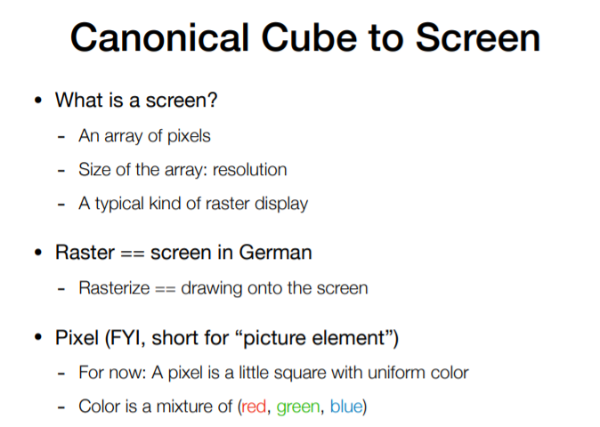

L05~06 Rasterization 光栅化
1 从标准化设备坐标NDC到屏幕
之前我们通过MVP矩阵把物体坐标变换到标准化设备坐标NDC（每个顶点的x，y，z坐标都应该在-1.0到1.0之间），那么接下来我们需要把它映射到屏幕中。
- 何为屏幕？在图形学中，我们认为屏幕是一个二维数组，数组里的每一个元素为一个二维像素。屏幕是一个典型的光栅成像设备，光栅化的过程就是把东西画在屏幕上的过程。
- 何为像素？在这门课中我们暂时认为它是小的方块，内部的颜色是一个整体的颜色，颜色值用RGB表示。
屏幕空间即在屏幕中建立坐标系，XOY平面屏幕空间坐标为整数，范围从(0,0)到(width-1,height-1)，像素(x,y)中心在(x+0.5,y+0.5)。
2 从图形到光栅显示
三角形是最基本的多边形，拥有很多特性：
- 三角形可以分解其他的多边形
- 三角形保证是平面的
- 三角形的内外定义清晰，可以用叉乘判断内外
- 三角形内可以定义明确的插值方法
2.1 采样
采样也就是把一个函数离散化的过程。我们定义了一个inside函数，判断了像素中心是否在三角形内部。
这个inside函数如何实现判断点Q呢？我们要做的是叉乘：
判断 \(P_1P_2 \times P_1Q\), \(P_0P_1 \times P_0Q\), \(P_2P_0 \times P_2Q\) 这三个结果是否相同（右手螺旋定则确定Q点朝向屏幕内还是屏幕外）。

我们不必采样所有的屏幕，用BoundingBox包围盒的概念可以加速，在最小范围内采样。

2.2 采样的缺点
我们经过采样后的图案是锯齿状的。像素本身有一定的大小，同时我们的采样率对于信号来说不够高，造成了锯齿问题。于是我们就要接触到，走样与反走样。
3 反走样（抗锯齿）


图片走样的原因：真实世界的采样率是无限的，而屏幕的分辨率是有限的。
基本抗锯齿思想：先做模糊，再做采样（卷积）。
- 只要不是横平竖直的线条，就一定会出现锯齿
- 物体表面细节不足以表达：摩尔纹
- 高频、变换速度快：高光

思想：我们知道屏幕上像素的采样是不充分的，所以我们就多采样几次，把采样的值再平均。
超采样（SSAA）& 多采样（MSAA）

SSAA：把所有尺寸double一下再降频为最终的结果。缺点：付出了4x的计算代价。
锯齿产生最多的地方在几何的边缘，超采样中的大部分点其实不需要超采样，因为很多点都在几何的内部，真正有问题的是那些只占据一小部分的像素。
MSAA：虽然对空间依然是4x的采样，但做shading的时候，如果这四个像素都落在同一个像素上，那就只shading一次。如果不在一个像素上，那就都shading好，再根据占据比例算一个平均值。
缺点：现代游戏几何密度非常高，有可能模型三角面的数量远超过像素的数量，这时就会失效。
快速近似抗锯齿（FXAA）

现今工业界的方向之一
想法：提取图片的edge，只在edge的地方用插值的方法。对一个像素点采样它上下左右的像素做平均，如果大于某个阈值，那么就标记为边界。阈值怎么获得：把图片转化为亮度空间在对上下左右比较色差。

如何判断抗锯齿插值是上下方向还是左右方向


颜色插值的原理


速度极快的FXAA，现在商业显卡内置
时序抗锯齿（TAA）

思想：这一帧的计算用前一帧的数据，在时间轴上找数据。


TAA没开时有很多的抖动
TAA缺点：看见On/Off之间有偏移了吗？因为TAA是和上一帧做的blend，所以会有一些offset，做不好时也会出现一些残影。